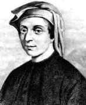

Algoritm Fibonacci
Leonardo Fibonacci (n. 1170, Pisa, Republica Pisa – d. 1240, Pisa, Republica Pisa), cunoscut și sub numele de Leonardo din Pisa, Leonardo Pisano, Leonardo Bonacci, sau pur și simplu Fibonacci, a fost un matematician italian considerat drept „cel mai talentat
matematician din Occidentul Evului Mediu”

Fibonacci este cel mai bine cunoscut lumii moderne pentru:
Răspândirea sistemului de numărare hindu-arab în Europa, prin publicarea în primul rând la începutul secolului al 13-lea a cărții sale denumită Cartea de calcul
, sau Liber Abaci. Un șir de numere, care i-a purtat ulterior numele, și anume șirul lui Fibonacci, pe care nu el l-a descoperit, dar pe care l-a folosit ca un exemplu în cartea sa, Liber Abaci.
Unul din marile merite ale lui Fibonacci constă în introducerea aritmeticii în sistemul comercial european. Astfel, a dat importanță cifrei zero și a recunoscut superioritatea sistemului de numerație arab față de cel roman. La Fibonacci apar
operații cu numere fracționare, procedeul de aducere la același numitor, procedee de rezolvarea a problemelor de aritmetică comercială, împărțirea în părți proporționale, probleme de amestecuri, operații cu numere iraționale, relații de
recurență, problema păsărilor etc.
A propus un șir de numere naturale în care fiecare termen este egal cu suma celor doi precedenți, numit ulterior șirul lui Fibonacci. În probleme de algebră, tratează
teoria ecuațiilor de gradul al doilea, progresii, sume de serii. A interpretat numerele negative și le-a introdus în algebră. A stabilit valoarea lui π ca fiind 864/275. Liber Abaci Articol principal: Liber Abaci. În cartea Liber Abaci
("Cartea abacului", 1202), Fibonacci introduce așa-numitul modus Indorum (metoda indiană), metodă cunoscută astăzi sub numele de cifrele arabe (Sigler 2003; Grimm, 1973).
Cartea descrie o enumerare cu cifre cuprinse de la 0 la
9 cărora le conferă câte o valoare separată.
Cartea a relevat importanța practică a noului sistem de numărare, folosind multiplicarea structurală și fracțiile egiptene, prin aplicarea sistemului în evidența contabilă
la conversiile greutăților și a măsurilor, la calculul dobânzii, la schimbul valutar, precum și la alte aplicații de acest gen. Cartea a fost bine primită în întreaga Europă de către oamenii educați și a avut un impact profund asupra gândirii
europene.
Cartea Liber Abaci a ridicat și a rezolvat, de asemenea, o problemă care privea creșterea populației ipotetice a iepurilor, în baza unor presupuneri idealiste.
Soluția, generație de generație, a dus la o secvență
de numere, cunoscută mai tarziu ca șirul lui Fibonacci. Șirul de numere era cunoscut matematicienilor indieni încă din secolul al 6-lea, însă cartea Liber Abaci a lui Fibonacci a fost cea care a introdus această secvențialitate în occident.
La scrierea acestei cărți, s-a folosit de o lucrare a lui Abraham bar Hiyya, scrisă în ebraică și tradusă în latină de Platon din Tivoli.
Șirul lui Fibonacci Articol principal: Numerele Fibonacci. În șirul de numere
al lui Fibonacci, fiecare număr reprezintă suma a două numere anterioare, începând cu 0 și 1. Astfel, șirul incepe cu 1, 1, 2, 3, 5, 8, 13, 21, 34, 55, 89, 144, 233, 377, 610 etc Cu cât este mai mare valoarea unui număr din cadrul acestui
șir, cu atât mai mult se apropie de corelația supremă două "numere Fibonacci" consecutive din șir, numere care se împart prin ele însele (aproximativ 1 : 1,618 sau 0,618 : 1). Corelația supremă a fost folosită pe scară largă în timpul
Renașterii, în picturi.
Leonardo Fibonacci s-a născut în jurul anului 1170, tatăl lui fiind Guglielmo Fibonacci, un negustor italian înstărit. Guglielmo deținea un post de conducere în cadrul comercial (din varii motive a fost consultant pentru Pisa)
în Bugia, un port la est de Alger, în sultanatul dinastiei Almohad din Africa de Nord (în prezent Bejaia, Algeria). În tinerețe, Leonardo obișnuia să călătorească cu tatăl său pentru a-l ajuta și astfel el a învățat limba arabă și despre
sistemul numeral hindus-arab Numele de Fibonacci derivă din Leonardo filius Bonacci Pisano. După unii istorici, se numea Bighelone, cuvânt sinonim cu Bonacci.
Recunoscând că aritmetica cu ajutorul cifrelor
hindu-arabe este mai simplă și mai eficientă decât cea cu cifrele romane, Fibonacci a călătorit prin mai toate țările de pe țărmul Mării Mediterane (Egipt, Siria, Bizanț, Sicilia și Provența) pentru a studia cu profesori de seamă de origine
arabă din acele vremuri. Face cunoștință și cu algebra lui Al-Khwarizmi.
Leonardo s-a întors din călătoriile sale în jurul anului 1200. În 1202, la vârsta de 32 ani, el a publicat ceea ce a învățat în Liber Abaci (Cartea
lui Abacus sau Cartea de calcul) și astfel a introdus cifrele hindu-arabe în Europa. Leonardo a devenit un oaspete de seamă al împăratului Frederic al II-lea, căruia îi plăceau matematica și științele exacte. În 1240 Republica din Pisa
l-a onorat pe Leonardo, cunoscut sub numele de Leonardo Bigollo, acordându-i un salariu în acest sens.
În secolul al 19-lea, a fost ridicată o statuie a lui Fibonacci care a fost dezvelită în orașul Pisa. Astăzi statuia
este găzduită de galeria occidentală din Camposanto din cimitirul istoric situat în Piazza dei Miracoli.